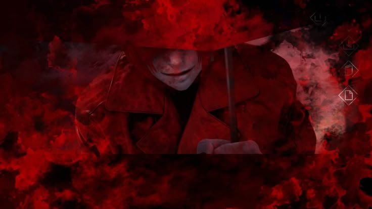
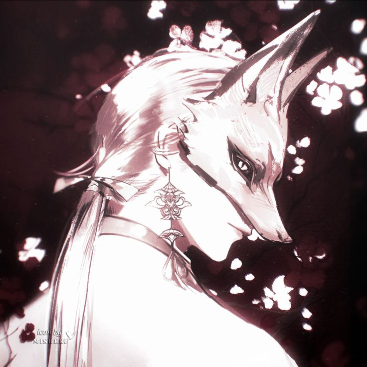
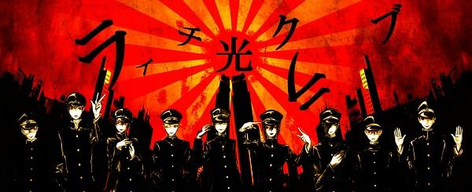

เมืองผี ไม่มีมนุษย์หรือสิ่งมีชีวิตอื่นใดอาศัยอยู่ ผู้มาเยือนจะเข้ามาได้ก็ต่อเมื่อถูกเหล่าวิญญาณเพ่งเล็งเป็นพิเศษเท่านั้น และตัวเมืองแห่งนี้ยังมีคุณสมบัติพิเศษที่ทำให้ ของศักดิ์สิทธิ์ใช้งานไม่ได้ ตลอดเวลาที่อยู่ในเขตเมือง
แคว้นฉินรวมแผ่นดินแดนมังกรเป็นหนึ่งโดยจิ๋นซีฮ่องเต้ ต้านทานการรุกรานของมองโกเลียและชนเผ่าป่าเถื่อนได้อย่างน่าประทับใจ จนถูกขนานนามว่าเป็นเทพเจ้าในร่างมนุษย์ ทว่าเวลาผ่านไปนับร้อยปีเขากลับไม่แก่ลงเลย
ความแคลงใจนำไปสู่แผนลอบปลงพระชนม์โดยทหารและชาวเมืองที่ร่วมกบฏ แต่ทั้งหมดถูกสังหารโดยชายคนเดียวอย่างโหดเหี้ยม เมืองใหม่ถูกสร้างทับสนามรบที่เต็มไปด้วยซากศพ ผูกมัดวิญญาณทั้งหมดไว้กับเมืองใหม่ตลอดกาลด้วยคำประกาศิต "เราจะสร้างทุกอย่างขึ้นมาใหม่ โดยมีพวกเขาเป็นรากฐาน"
ผนึกวิญญาณมหาศาลกลายเป็นความศักดิ์สิทธิ์ของเมือง วิญญาณถูกชุบกายผ่านการปั้นหุ่นดินเผาตามคำสั่งของฮ่องเต้ ทว่าหุ่นเหล่านี้ทำได้เพียงปฏิบัติตามคำสั่งของเจ้านายเท่านั้น ไม่อาจหันคมอาวุธใส่ทรราชย์ได้แม้แต่น้อย ต้องรบราฆ่าฟันชิงชีวิตจากผู้บริสุทธิ์เพื่อปกป้องเมืองที่แสนเกลียดนี้ตลอดมา
ทหารดินเพิ่มจำนวนขึ้นเรื่อยๆ จากการตายของผู้คนในเมือง จนวันหนึ่งต้นหลิวท้ายเมืองงอกกิ่งหยกสีใสประหลาด ชาวเมืองนำมาบดให้หญิงสาวคนหนึ่งกิน ภายในไม่กี่เดือนเธอคลอดธิดาออกมา แต่ตัวมารดาจากโลกไปตั้งแต่วินาทีที่เด็กลืมตาดูโลก ทหารดินที่ไม่ถูกออกคำสั่งแอบเลี้ยงเด็กสาวไว้ลับๆ เด็กใช้เวลาเพียง 13 วันเติบโตเป็นหญิงสาวเต็มตัว
หญิงสาวผู้ถูกปลูกฝังความโกรธแค้นวางแผนก่อกบฏ โดยรอจังหวะที่ภูติผีและปีศาจไร้นามบุกถล่มเมือง แล้วกำราบพวกมันได้อย่างง่ายดายต่อหน้าฮ่องเต้ จนได้เป็นพระชายาคนโปรด ใกล้ชิดฮ่องเต้มากกว่าใครในรอบหลายร้อยปี
คืนที่ฮ่องเต้ไว้ใจที่สุด เธอพยายามลอบปลงพระชนม์ด้วยการบีบคอ และรู้ความจริงว่าเขาไม่เคยมีชีวิตให้ตายมาตั้งแต่แรก
ปีศาจจู่โจมหญิงสาวจนเกือบสิ้นลม ก่อนสวมชุดแต่งงานให้เธอแล้วสังหารเธอในชุดนั้น แต่ร่างของเธอคือพิษร้ายจากสวรรค์มาตั้งแต่แรก เป็นพิษที่คร่าชีวิตผู้เอาชีวิตของเธอไปนั่นเอง
เธอลุกขึ้นด้วยสภาพใกล้ตาย ลากสังขารไปยังต้นหลิว ผูกริบบิ้นแดงนับพันไว้ที่กิ่งก่อนสิ้นใจ ปลดปล่อยทหารดินทั้งหมดที่ถูกกักขังนับพันปี พวกเขาสาบานจะปกป้องวิญญาณของเธอไปจนกว่าเมืองนี้จะสลายหายไป
กายทิพย์ลอยได้ ทะลุผ่านสิ่งกีดขวางที่ไม่ใช่วัตถุศักดิ์สิทธิ์ ต้านทานการโจมตีกายภาพ/เวทย์ แต่แพ้เวทย์มนต์ศักดิ์สิทธิ์ระดับรุนแรง ธาตุหลักคือหยิน เป็นศัตรูกับสิ่งมีชีวิตโดยปริยายยกเว้นปีศาจ
ทอย 1d20 มากกว่า 15 เพื่อหลุดสถานะควบคุมทันที หากพลาด เทิร์นถัดไปทอยเพียง 6 ขึ้นไปก็หลุดได้ และเข้าสถานะป้องกัน CC หนึ่งเทิร์น
| ระดับ | Lv | ทนทาน | ความเร็ว | พลังทำลาย |
|---|---|---|---|---|
| I | 0–5 | คอนกรีต | คนวิ่ง | ไม้หัก คอนกรีตร้าว |
| II | 6–10 | ทองแดง | นักกีฬาวิ่ง | คอนกรีตแตก ทองแดงบุบ |
| III | 11–15 | เหล็ก | กวางวิ่ง | ทองแดงแหลก เหล็กเสียรูป |
| IV | 16–20 | เหล็กกล้า | เสือวิ่ง | เหล็กแหลก เหล็กกล้าเสียรูป |
| V | 21–25 | ไททาเนียม | เสือชีตาห์ | เหล็กกล้าแหลก ไททาเนียมบุบ |
| ธาตุ | ขั้น I | ขั้น III | ขั้น V |
|---|---|---|---|
| ไฟฟ้า | ไม้หัก คอนกรีตร้าว | ทองแดงหัก เหล็กบุบ | เหล็กกล้าหัก ไวเบรเนียมบุบ |
| เปลวเพลิง | 400c | 1200c | 2800c |
| น้ำแข็ง | แข็งเท่าคอนกรีต | แข็งเท่าเหล็กกล้าต่ำ | แข็งเท่าไวเบรเนียมสูง |
| พลังวิญญาณ | ทำร้ายผีระดับ I เล็กน้อย | ทำร้ายผีระดับ II สาหัส | ทำร้ายผีระดับ IV สาหัส |
ไร้ญาติ หลงทาง ไม่มีอิทธิฤทธิ์
ตายด้วยความคับแค้น หลอกหลอน สิงสู่
ดูดพลังหยินฟื้นคืนชีพ ไร้ความเจ็บปวด
บำเพ็ญตบะนาน แปลงกาย ควบคุมธาตุ
จิตบริสุทธิ์ใกล้เทพเจ้า มีศาลเจ้าเป็นของตน

ชายหนุ่มผมแดงราวกุหลาบยามเช้า เย็นชา คาดเดาไม่ได้ ชอบเสียงฝนกระทบร่มและความเงียบสงบ ไม่ชอบแสงสว่างจ้า
สายฝนแห่งร่มแดง: ฝนตกรอบตัวเสมอเมื่อปรากฏ ความรุนแรงแบ่ง 3 ระดับตามอารมณ์ ปกติ / หงุดหงิด / อาฆาต

กึ่งมนุษย์กึ่งจิ้งจอก ผมขาว หูจิ้งจอกตั้งชัน สุขุมเยือกเย็น พูดสุภาพเกินความจำเป็น เกลียดคำสัตย์สาบานเพราะเคยเชื่อจนตัวตาย
ประวัติ: อดีตขันทีคนโปรดของฮ่องเต้ ถูกฆ่าเป็นคนแรกเมื่อนครเกิดโกลาหล วิญญาณผูกติดหีบคัมภีร์ สวดบทกลับหลังสาปคำสัตย์สาบานของมนุษย์
พลังพิเศษ: 🔒 ยังไม่สามารถใช้ความสามารถได้

อดีตทหารดินเก้านายที่ได้รับจิตวิญญาณคืนมาในคืนที่ธรณีประตูแง้มเปิด สวมเครื่องแบบสีดำทรงคอตั้งคล้ายชุดนายทหารโบราณ หมวกทรงหม้อตรูปสีดำ ใบหน้าซีดขาวไร้สีเลือด ยืนเฝ้าต้นหลิวท้ายเมืองตลอดกาล ไม่พูดกับใครนอกจากกันเอง
หัวหน้าองครักษ์โดยพฤตินัย
ร่างสูงใหญ่ที่สุดในเก้าคน เกราะดินเผาแตกร้าวเป็นเส้นคล้ายรอยผ่าฟ้า มือขวากำริบบิ้นแดงเส้นแรกไว้ตลอดเวลา พูดน้อย ตัดสินใจเด็ดขาด เป็นผู้ตัดสินใจสุดท้ายว่าใครจะเข้าใกล้รากต้นหลิวได้
ผู้เฝ้ายามกลางคืน
ร่างเพรียวบาง เคลื่อนไหวเงียบราวไม่มีน้ำหนัก รอยแตกบนตัวเรืองแสงสีน้ำเงินจางยามค่ำคืน ไวต่อความเปลี่ยนแปลงของแสงเงาและลมมากที่สุด
ผู้เฝ้าด้านการต่อสู้
ถือดาบดินเผาที่แตกเป็นรอยแต่ไม่เคยหัก ท่ายืนพร้อมชักดาบตลอดเวลา ตึงเครียด ระแวดระวังเกินเหตุ มักถูกคนอื่นขอให้ผ่อนดาบลง
ผู้เก็บความทรงจำ
ท่าทางอ่อนโยนกว่าคนอื่น มือประคองเศษผ้าไหมของหญิงสาวใบหยกไว้เสมอ เศร้าสร้อยแต่สงบ เป็นผู้บันทึกประวัติศาสตร์ของกลุ่ม
ผู้เฝ้าโคนต้นหลิว
ร่างเตี้ยแต่แน่นและมั่นคงที่สุด นั่งคุกเข่าที่โคนต้นแทบตลอดเวลา อดทน นิ่งเฉย ราวกับกลายเป็นส่วนหนึ่งของรากไม้
ผู้เฝ้ายอดต้นหลิว
มักปีนป่ายอยู่บนกิ่งสูง มองลงมาสำรวจเมืองจากมุมสูง ช่างสังเกต พูดจาเป็นปริศนาบ้างเป็นบางครั้ง
ผู้ดูแลจำนวนริบบิ้น
มือทั้งสองเต็มไปด้วยรอยผูกปมจากการนับริบบิ้นซ้ำแล้วซ้ำเล่า เจ้าระเบียบ ย้ำคิดย้ำทำ นับทุกอย่างรอบตัวโดยไม่รู้ตัว
ผู้เฝ้ายามตลอด 24 ชั่วโมง
ดวงตาทั้งคู่แตกร้าวจนดูเหมือนเปิดค้างตลอดเวลา ไม่เคยแสดงท่าทีอ่อนล้า มองว่าการเฝ้ายามคือเหตุผลเดียวที่ตนยังมีตัวตนอยู่
ผู้เฝ้าริบบิ้นเส้นสุดท้ายของหญิงสาวใบหยก
ร่างเก่าแก่ที่สุด รอยแตกลึกที่สุด ท่าทางอ่อนแรงกว่าคนอื่นราวกับแบกรับน้ำหนักบางอย่างไว้ตลอดเวลา สงบนิ่งที่สุด พูดน้อยแต่มีน้ำหนักเสมอ
เข็มเงินยาวเพรียว พันเส้นไหมแดงจารึกอักษรกลับหัว มูลค่า 350,000 เหรียญ
Vow Reversal: ตรวจจับคำสัญญาล่าสุดของเป้าหมาย เพิ่มความเสียหาย 50% หากเพิ่งเอ่ยคำสัญญา
Backward Chant: Silence 1 เทิร์น + แผลใจรักษาได้เฉพาะเวทย์ศักดิ์สิทธิ์ 2 เทิร์น ไม่มีผลกับศัตรูสูงกว่า 2 ระดับ ใช้ได้ 3 ครั้ง/การต่อสู้
เหรียญทองเหลืองโบราณ 5 เหรียญ ร้อยเชือกแดงปมจีน รางวัลจากเควสซ่อมบูรณะ อาจมีผลกระทบต่อเนื้อเรื่อง
Emperor's Barrier: ป้องกันความเสียหาย 1 ครั้งจากการโจมตีระดับ III ลงมา ใช้ได้ 5 ครั้ง
ข้อจำกัด: ใช้เหรียญแล้วไม่ใช้ต่อเนื่อง รับความเสียหายครั้งถัดไปเพิ่ม 2 เท่า
ปราบหรือขับไล่ผีพเนจรที่รบกวนบทสวดใกล้ศาลเจ้า ไม่จำเป็นต้องต่อสู้เสมอไป
ช่วยให้ผีเฮี้ยนหลุดจากร่างที่สิงสู่ชาวเมือง
ปราบผีดิบที่โผล่จากสุสานเก่าใกล้ศาลเจ้า
สืบหาผู้ผิดคำสัตย์สาบาน นำหลักฐานกลับมาให้ฉางฮันเย่อลงโทษ การต่อสู้เป็นทางเลือก ไม่บังคับ
ประเภท: ไม่จำเป็นต้องต่อสู้ (สืบหา/สำรวจ)
ผู้เล่นต้องไปแนะนำตัวรับเควสกับผู้ให้เควสก่อน เขาทำหม้อดินเผาหายระหว่างทางกลับศาลเจ้า และต้องการให้ผู้เล่นช่วยตามหา รายละเอียดเส้นทางต้องสอบถามกับตัวเขาโดยตรงในบทสนทนา
รางวัลความสำเร็จ: 120 EXP + โอกาสเพิ่มความสัมพันธ์กับฉางฮันเย่อ
ประเภท: อาจมีการต่อสู้ (วางแผน/ทางเลือก)
ฉางฮันเย่อต้องการให้ผู้เล่นช่วยจัดการงานก่อสร้าง เกี่ยวกับการซ่อมบูรณะพื้นที่หนึ่งซึ่งค่อนข้างอันตราย รายละเอียดเส้นทางและวิธีดำเนินการต้องสอบถามกับตัวเขาโดยตรง
รางวัลความสำเร็จ: 220 EXP + เงิน 1,600 เหรียญ
หมายเหตุ: เควสนี้อาจปรากฏในพื้นที่ต่างๆ ของเมือง รางวัลและระดับความอันตรายอาจแตกต่างกันไปตามจุดที่รับ
ความผิดปกติเล็กๆ กระจายทั่วเมือง ฉางฮันเย่อเริ่มมีอาการพลังรั่วโดยไม่ทราบสาเหตุ
ความจริงเผยว่ามีเศษวิญญาณจักรพรรดิปีศาจฝังอยู่ในตัวฉางฮันเย่อตั้งแต่วันที่เขาถูกฆ่า
ทหารดินไร้วิญญาณทั่วเมืองเริ่มจัดทัพอีกครั้ง อีเวนต์ระดับเมืองที่ทุกฝ่ายต้องร่วมมือป้องกัน
ผู้เล่นเลือกชะตากรรมของฉางฮันเย่อ — ชำระล้าง ผนึกซ้ำ หรือทำลายทิ้ง
ข้อมูลในหน้านี้เป็นความจริงเบื้องหลังที่ผู้เล่นไม่ควรรู้ล่วงหน้า ใช้สำหรับผู้คุมเกม/แอดมินเท่านั้น เพื่อรันเนื้อเรื่องให้สอดคล้องกัน
พลังหยินจากผนึกวิญญาณของจักรพรรดิปีศาจปกคลุมทั่วทั้งเมืองในระดับรากฐาน ทำให้พลังหยางของวัตถุศักดิ์สิทธิ์ถูกกลืนกลายจนไร้ผล ใช้กลไกนี้อธิบายว่าทำไมผู้เล่นสายมนุษย์/นักบวชจะเสียเปรียบเมื่อเข้าเมืองนี้ และเป็นเหตุผลว่าทำไมสิ่งเดียวที่ยังใช้ได้คือของที่มีรากมาจากพลังหยินเอง เช่น เหรียญห้าจักรพรรดิ
เธอไม่ได้เกิดขึ้นโดยบังเอิญ กิ่งหยกที่ต้นหลิวงอกมาคือร่องรอยของพลังสวรรค์ที่ถูกส่งลงมาอย่างจงใจ เพื่อสร้าง "อาวุธ" สำหรับกำจัดจักรพรรดิปีศาจโดยเฉพาะ ริบบิ้นแดงที่เธอผูกไว้ตอนสิ้นใจไม่ใช่แค่คำอธิษฐาน แต่คือส่วนหนึ่งของพิธีกรรมที่เชื่อมโยงกับผนึกใหญ่ของเมือง นี่คือเหตุผลที่ทหารดินยังคงสาบานปกป้องวิญญาณของเธอ ไม่ใช่ปกป้องเมืองโดยตรง
ฉางฮันเย่อถูกฆ่าเป็นคนแรกไม่ใช่เรื่องบังเอิญ แต่เพราะจักรพรรดิปีศาจฝังเศษวิญญาณของตนไว้ในร่างของขันทีที่ภักดีที่สุด เป็นการลงโทษเชิงสัญลักษณ์ ตัวฉางฮันเย่อเองไม่รู้เรื่องนี้ นี่คือสาเหตุที่แท้จริงว่าทำไมพลังของเขาถูกล็อกไว้ในสถานะปัจจุบัน ให้ใช้ข้อมูลนี้เป็นแกนกลางของอาร์คเนื้อเรื่องอนาคต "รอยแตกที่ถูกปลุก"
ใช้หม้อดินเผาใบนี้เป็นจุดเชื่อมโยงเข้าอาร์คใหญ่ได้ แนะนำให้กำหนดว่าภายในหม้อบรรจุเถ้ากระดูกของทหารกลุ่มแรกที่ตายในสงครามกบฏ หรือเป็นภาชนะที่เคยใช้เก็บเสียงสวดต้องห้ามที่ฉางฮันเย่อไม่อยากให้ใครเจอ ผู้เล่นที่ทำเควสนี้สำเร็จอาจได้ยินเสียงกระซิบแปลกๆ จากหม้อโดยไม่รู้ความหมาย เก็บไว้เป็นปมสำหรับอาร์คถัดไป
เควสเล็กๆ อย่างตามหาหม้อดินเผาและซ่อมบูรณะพื้นที่ควรถูกใช้เป็นจุดหว่านเมล็ดพันธุ์ (foreshadowing) อย่างสม่ำเสมอ ก่อนเข้าสู่เฟส 1 ของอาร์คใหญ่จริง ให้ฉางฮันเย่อแสดงพฤติกรรมผิดปกติเล็กน้อยระหว่างบทสนทนาในเควสเหล่านี้ เพื่อไม่ให้เฟส 2 (เปิดโปงผู้บงการ) รู้สึกฉับพลันเกินไปสำหรับผู้เล่น